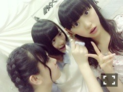

2014/0531Sat始まりました
プリンシパル初日を迎えました！
初参加でずっと緊張してお腹が
痛くてどうなるかと思ったm(._.)m
だけど先輩達が緊張をほぐして
くださったりお客さんが優しくて
救われましたm(._.)m
観にきてくださった方
ありがとうございます！！
初めて参加して沢山感じた事が
あるしこれがプリンシパルなんだ
っていう実感も湧いてきました
初、生カメラで緊張して映画が
観たいですとか自分でも訳の
わからない事をとっさに
言ってしまったりと
バタバタな一日でした(笑)
初日は16役には選ばれませんでした
元々競うが嫌いなのでプリンシパル
は正直怖かったです
でも役に選ばれた人の気持ちはまだ
私には分からないけどきっと凄く
嬉しいんだろうなって思うと私も
自分の事のように嬉しくて(^.^)！！
だけど1番、自分自身には
負けたくないっていう人間なので
ここで落ち込むんじゃなくて次に
生かせるように考えて練習して
もっともっと振り切って今まで
出さなかった本当の堀未央奈を
見てもらえるように
頑張りたいと思います☆
見にきて下さった方に早く私の
初舞台を見てもらいたいな！
皆さんの笑顔が私のパワー！
残り21公演、全力だー！
にたにた笑顔で沢山笑う(๑و•̀ω•́)و
2014/0529Thuレッツゴーっ！ポリン姫
いよいよ明日から赤坂ACTシアター
で「16人のプリンシパル」
が始まります
22公演の中でどれだけ成長できるか
皆さんに楽しんでいただけるか沢山
考えて感じて学びたいと思います
そして2期生は初参加です！
12人で力を合わせて先輩達の
レベルの高いお芝居に追いつける
よう全力で頑張ります☆☆
去年はお披露目の挨拶としてだけど
今年は出演者としてステージに
立ちます。うーん月日は早いなぁ。
色んな私を見てもらいたい
っていう第一目標があって
今日までお稽古頑張ってきました！
"殻を破る"
まずは観にきてくださる皆さんに
楽しんでもらえるような、会場が
笑顔で溢れる公演にしたい(=^ェ^=)
よし！不安もあるけど楽しみな
気持ちも大きいから大丈夫なはず！
頑張ります。。
笑顔で元気に！お待ちしてます！
ではでは
今日も1日楽しみおな(ヽ´ω`)
2014/0523Friぐう
5月25日の18:56からびっくりぃむ2014！
ドッキリし掛けられたので
乃木坂46がVTRにも出演します！
私も一応います٩(๑❛ᴗ❛๑)۶見てね〜
ホラーは苦手
おばけも苦手
でも洋画は好き
堀未央奈です( ˃̶̤ ·̫ ˂̶̤ )
怪物系は割と好きだけど
完全なるホラーは
本当に無理です心霊系も。
自分でもよく分からなくなってきた...
あ、でも日曜日にバイオハザードⅢが
TVでやるみたいなので高山さん達と
一緒に見たいね〜って話してたの！
皆さんも見ましょう！是非！
みなみおな♡
只今、制作期間真っ最中デス！
終始笑っぱなしで元気元気！
みんなと話したりふざけあう時間が
楽しくて疲れも感じないよ(๑و•̀ω•́)و
写真も沢山撮ってるから早く
載せたいなー
良い作品になるように力を合わせて
頑張ります！夏！！夏が1番好き！
プリンシパルのお稽古も奮闘中。
ガンバロー
最近は沢山覚える事
やる事があって頭がパンパン！
でも毎日充実してて勉強になる日々。
今の私は努力するのみだと思うので
壁を乗り越えていきます(๑و•̀ω•́)و
気合いだ(๑و•̀ω•́)و
眠気なんて(๑و•̀ω•́)و
吹っ飛ばせ(๑و•̀ω•́)و
握手会で、元気ちょうだい！
なにかパワー送って！って言われたら
時々まれにお腹をパンチします
あちょーーーーってね(笑)
乃木坂らしさ全開のワンピース☆
この夏はストレートヘア多めで
いきます！
質問返しは次回
オススメの音楽を教えて下さって
ありがとうございました٩(๑❛ᴗ❛๑)۶
聞いてみます！
純奈に貰ったぬいぐるみ
純ちゃーーん(ᐛ)ﾊﾟｧ
ってこの写真を送ったら
似てる、可愛い(ᐛ)ﾊﾟｧ
って返信がきて嬉しかった♡♡
皆さんはどんな髪型が1番好き？
握手会でやろうかな〜
ではではおやすみおな(ヽ´ω`)
2014/0521Wed活発女子！！
最近すごく一眼レフカメラ欲しい！
写真ってずっと眺めていられるし！
色んな所に行って写真におさめたい
海とか木とか空とか人間とか。
でも上手く撮る自信無いなぁ
上手い人、本当に尊敬する...♡
全握はまりかさんとペアでした！
エンタメのグラビアコンビ☆☆
いつもまりかさんのほんわりした
雰囲気に癒されてます！
七瀬さんとまりかさんのダンスが
個人的に大好きなの〜
あ、遊びに行く所決めました
楽しみ！
あーー。
USJのハリーポッター！行きたい！
ハーマイオニーの格好したい♡
寝癖だとハーマイオニーに近いよ！
どなたか行きませんか( ˃̶̤ ·̫ ˂̶̤ )？
実家の私の部屋の机はアメリカン☆
でも東京の家はシンプルに
白で統一しているのでご安心を！笑
相変わらずベッドの周りには
ぬいぐるみが沢山あるけど...
この間のブログの
YUIさんの好きな曲リストに対して
皆さんから反響があって嬉しい！
デビュー時からずっと好きだし
永遠の憧れです。芯の強い所が好き。
あんなかっこいい人になりたいな！
何よりも歌が素敵...
乃木坂では
やさしさとは
ロマンティックいか焼き
サイコキネシスの可能性
失いたくないから
月の大きさが好きです！
皆さんのオススメの音楽
知りたいなあ
前の横浜個握の続き
4部
E-girlsの鷲尾伶菜さんの格好を
完全コピー٩(๑❛ᴗ❛๑)۶
推しメンです！ふふ
ワンピース、ヘアバンド、
イヤリング、ヒール、ベルト
バッグだけ純奈に借りました♡

純奈と日奈子が私の
イヤリング狙ってる
助けてくれ〜
5部
ツインテール。
れいかさん、永島さん
お誕生日おめでとうございます☆
れいかさんは真夏さんくらい
いじりがいのある先輩なの！笑
でも時々れいかさんにいじられるけど...
あんなに整った顔なのに面白い所とか
話しやすい雰囲気が凄く好きです！
FNS歌謡祭の時、ダンスがペアで
目を合わせる所のれいかさんの顔に
毎回爆笑してしまいすみませんでした
(つД`)ノ笑
れいかさんがメールで送ってくる
バナナの絵文字がれいかさんに
そっくりでこれまたツボ。
永島さんは同じ東海地方出身で
初期の頃からよく話しかけて
くださって！いつも明るいし面白いし
よく永島さんにいじられる私だけど
毎日元気貰ってます！
NOGIBINGO2で永島さんにドッキリ
を仕掛けて以来ぐんっと距離が
縮まった気がします٩(๑❛ᴗ❛๑)۶
私も慣れるとハイテンションな人
なのでもっとふざけあいたいな〜♡
本当におめでとうございます
そうそう、リハの合間に
ゆうりさんにキウイとパイナップル
あーんしてもらいました٩(๑❛ᴗ❛๑)۶
羨ましいでしょ！ふふ
あとね松村さんにカメラを向けられた
から満面の笑みでニコーってしたら
めっちゃアップに拡大されて
それが松村さんの待ち受けに
なりました...（；゜０゜）
ひいいい〜（；゜０゜）♡
質問返しめちゃめちゃ長め
5/10「mother's day」
◎No.1 みるきー＠世界で一番
乃木坂Loversさん
お疲れー
○ありがとう^o^
◎No.10 KEIさん
みおな〜
○ほい？？
◎No.100 こーたさん
多分 お寝坊さんしちゃう
かもしれないから...
お寝坊さんしたなって
思ったらあだ名付けてね♪また♪
ツチノコみたいな顔って言われたとき
びっくりして話そうとしてたことが
話せなくなっちゃって
ごめんちゃい(;＞_＜;)
(／。＼)
人(￣ω￣;)
(必死の土下座)
○寝坊したら塩対応しますね^o^
こちらこそいきなりごめんなさい
とっさに出てきた単語が
ツチノコでしたm(._.)m
5/13「9枚目」
◎No.1 シュトロハイムさん
ほっちゃん！
選抜おめでとう(#^.^#)
頑張って！
○ありがとう！
頑張ります！！！！！
◎No.3 学ランやろーさん
選抜おめでとー
これからも頑張って！！
○ありがとう！頑張ります！
◎No.13 ナイキ君さん
ずっと支える！
○ありがとうm(._.)m
頑張ります！！
◎No.130 ソーイチローさん
未央奈、選抜入りおめでとう(σ≧▽≦)σ
自分的には３列目に未央奈が
入ったことは全然悲しいこと
じゃなくて！！
今回は３列目だから、
後ろから踊っているメンバーが
見れていいよね！
って思ってる(*^_^*)！
そこから色んなことを勉強して、
またセンターに戻ってくる日を
楽しみに待ってます(≧▽≦)！！
○ありがとう^o^
皆さんにそう言ってもらえると
凄く安心します！
沢山学んでもっと成長できる
ように自分への悔しさをバネに
上だけをみて頑張ります
前進！！！
5/17「髪の色素」
◎No.1 あつろーさん
みおなー！
○あつろうそく(:ᘌꇤ⁐ꃳ 三
◎No.7 sota⊿さん
みおな尊敬してる！
○え！そんな、尊敬だなんて>_<
◎No.17 匿名さん
ほりちゃん♡かわいい♡
初コメです！
○いやいや>_<
コメントありがとうございます♪
◎No.170 ええちゃんさん
デブ屋本店行ってきたよーって
言ったおじさんです、又、
行きたいです 堀ちゃんと（笑）
○ありがとうございます^o^！
ええ〜(ヽ´ω`)
5/18「時差ボケしたい」
◎No.1 たむっちさん
みおなの魔女宅かわいかったよ♪
○違うよT^T
ラピュタのシータだよT^T
◎No.8 ナイキ君さん
だーいすき！
○ふふ( ˃̶̤ ·̫ ˂̶̤ )私も♡
◎No.18 せーの‼︎コーヘイ＼(^o^)／
さん
みおな( ❝̆ ·̫̮ ❝̆ )✧
○なに( ❝̆ ·̫̮ ❝̆ )✧
◎No.180 あおい♩.°さん
おやすみおな~~♡
って言いたいところだけど...
明後日からテストだから
今日はまだ寝れないな（´-`）.｡oO
○おやすみおな〜〜( ˃̶̤ ·̫ ˂̶̤ )？
あおいちゃん頑張って〜☆
いちごとトマトが特に好き
はあ。。夢の国に行きたい。
新しいカチューシャ欲しい。
ではでは
おやすみおな(ヽ´ω`)
2014/0518Sun時差ボケしたい
名古屋握手会2日間٩(๑❛ᴗ❛๑)۶
ありがとうございました！！！
気づいたら片想いの全握も昨日で
ラストでした。フロントで学んだ事を
これからも生かしていけるように
頑張っていきます。
突然の9th新制服、本日解禁！
私はブルーのリボンverです☆
髪型は片方編み込みのストレートで
基本いこうと思います٩(๑❛ᴗ❛๑)۶
もちろんアレンジ沢山するけど！
今日は名古屋で個別握手会。
1部 お団子にお姉ちゃんの
手作りリボンをつけました
ちなみに私の親友と家族も来てました
親友に久しぶりに会ってついつい
泣いちゃったT^T
久しぶりの触覚くるくる！
えへへー☆
そして私服は...
tops...ラフォーレ原宿の名前忘れた
skirt...確かマーキュリーデュオ
shose...確実にアメアパ
皆さんに沢山、バレリーナとか
シンデレラとか言われました(笑)
夏らしく爽やかにしたよ〜
お団子が好評で良かったです( ˃̶̤ ·̫ ˂̶̤ )
2部は巻きハーフツイン
3部はストレート
4部は三つ編みおな！で、
天空の城ラピュタのシータ
バルス！！！！！！
3人の方以外のほぼ全員に
キキだよねと言われましたT^T
分かりづらくてすみませんでしたT^T
9thから全会場5部制に増えました♪
すっごく嬉しいです♪
でもその分不安もあるけど
来てくださる方に来て良かったよ！
楽しかった！って言ってもらえる
ように毎回服や髪型を
色々考えて工夫していきたいな〜
その日その部、限定！みたいな！
実はもう色々決めてあるの( ˃̶̤ ·̫ ˂̶̤ )
よろしくお願いします( ˃̶̤ ·̫ ˂̶̤ )
質問返し長め5/4〜5/9
5／4「来世は飛行士」
◎No.3 ドットさん
こんにちは
○ぶひぶひー
◎No.30 よっちゃんさん
堀ちゃん明日の個握に
友達いくよー
レンくんね！
そして安定の堀ちゃんの可愛さ笑
○ありがとう^o^！
嬉しい♡
いやいやT^T
◎No.307 フィオーレさん
どーも！GWは岐阜を訪れる
ことになりました。
堀ちゃんオススメの
丸デブ本店の中華そば、
肉屋さんのハムカツなどなど
いただきました。
堀ちゃんのオススメめっちゃ
美味しい（＾∇＾）
いい舌を持っているなー
堀ちゃん。
これからも自由な風のような
生き方の堀ちゃんを応援します。
○おー^o^
行ってきたんですね！
ありがとうございます☆
5/5「5月5日」
◎No.3 よっちゃんさん
みおなー
○タラタラしてんじゃねえよ
好きだよわたし^o^
◎No.30 あつやさん
今日は記念すべき日
だったんだね！
堀ちゃん好きです！
今日は握手会行けなかったけど
これからも 応援してます！
○そうなんです☆
嬉しい！いつかお会いできる
日がくるのを楽しみにしてる！
◎No.307 りょーたさん
みおなファイト！！
おれもがんばろー(^^)
○頑張るよψ(｀∇´)ψ
ありがとう！
りょーたくんもfight！
5/8「安全ピン絡み」
◎No.3 ドットさん
こんにちは
○まとめだし楽しかったです^o^
ありがとう！
◎No.30 ごとゆうきさん
みおなーーー！！
名古屋全握いくね！！
みおなは何回握手行ったら
覚えてくれる？？？
○早くて1回
遅くて10回かな！
◎No.307 ももさん
いつ見ても、未央奈ちゃんの
私服は可愛くて、私好み！
いつか絶対会いに行きます！
それまで待っててください！
未央奈ちゃん大好きっっ♡
以上、ももでした(*･ω･)ﾉ
○好みだなんて嬉しいT^T
また来てね♡ありがとう♡
5/9「短い告知」
◎No.3 悦也@未央奈推しさん
みおな！
○えつや！！
◎No.30 みなと@乃木坂神推しさん
質問です！
みおなはおすすめの
観光地ってある？
これからも頑張ってね！
北海道からいつも応援してます！！
○湘南かなー。
あとは宮島！基本海が好き！
あとは岐阜の郡上とか下呂温泉、
京都の街並みも大好き！
ああ、湘南いきたいT^T
◎No.307 だいちゅんさん
りょうかいみるよ（≧∇≦）
○ありがとう^o^
ではでは
バス、新幹線とずっと隣だった
日奈子にずっとニタニタ笑いながら
何度も絡んでたら、やめて。
私まで笑っちゃうから。と言われ
それでもやめずに笑い続ける
ツボが浅い堀未央奈でした
おやすみおな(ヽ´ω`)